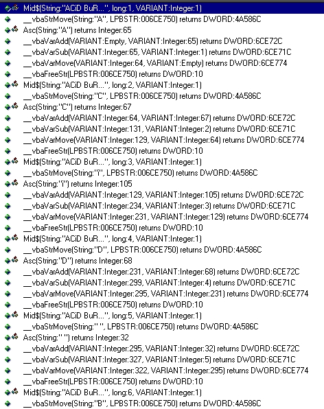
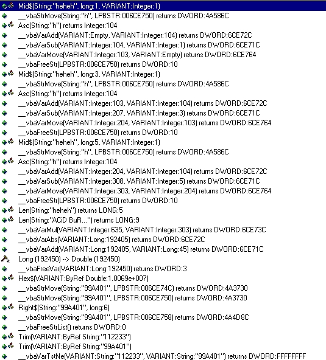

VB cracking: How to keygen Snowman32 v2.42 by ACiD BuRN [ECLiPSE / CiA]
hello all !
this is my 25th tutor , and i got some thanks for my previous tutors !!
thx all ppls who read my tuts and like them !!
well , let's start now !
Level : easy
protection : name / serial
where to get : http://www.abc-ware.de/
tools needed : Smart check 6 and VB to code the keygen
I)KEYGENING IT!
Ok , fire up your smart check and run the app with it!!
go in the register menu , and enter :
name : ACiD BuRN
City : heheh
serial: 112233
the programme say us : incorrect serial , blablabla !!
in smart check , you must see :
Mid$(String:"ACiD BuRN",Long1,VARIANT:Integer:1)
Asc(String:"A") returns Integer:65
Mid$(String:"ACiD BuRN",Long2,VARIANT:Integer:1)
Asc(String:"C") returns Integer:67
Mid$(String:"ACiD BuRN",Long3,VARIANT:Integer:1)
Asc(String:"i") returns Integer:105
......
this continue with all chars , but what the heck he is doing ??
In smart check , click on show all events, now u must see:

interesting !!!
lemme explain you , what he is doing !
Asc(String:"A") returns Integer:65 <== take the ascii value in decimal
__vbavaradd(VARIANT:empty,VARIANT:Integer:65) <== this add the ascii value to the last one
__vbavarsub(VARIANT:65,VARIANT:Integer:1) <== this substract the result of the addition with 1
__vbavarmov(VARIANT:64,VARIANT:Empty) <== mov the result for using it later..
so , we see what it is doing!
it take the ascii value of the current place of the loop, and add it to the last ascii result
(here it is 0 "empty")
then it substract one value (here it is 1)
and then move the result somewhere to use it later!!
let's look the next char : C , we see :
Asc(String:"C") returns Integer:67 <== take the ascii value in decimal
__vbavaradd(VARIANT:64,VARIANT:Integer:67) <== this add the ascii value to the last final
value (64 here)
__vbavarsub(VARIANT:131,VARIANT:Integer:2) <== this substract the result of the addition with
2 (2 = the current place of the char)
__vbavarmov(VARIANT:129,VARIANT:64) <== overwritte the last value with the new one..
.........
well , the prog does this for all chars of the name
for ACiD BuRN we found : 635
this value is found near the last letter of the name : "N" for ACiD BuRN :
Asc(String:"N") returns Integer:78 <== take the ascii value in decimal
__vbavaradd(VARIANT:566,VARIANT:Integer:78) <== this add the ascii value to the last one
__vbavarsub(VARIANT:644,VARIANT:Integer:9) <== Substract the value with the current posstion of
the name (N = 9th place of my name)
__vbavarmov(VARIANT:635,VARIANT:566) <== mov the result for using it later..
ok , now u see what i mean !!
now , scroll down in smart check and u see what the program is doing
with the City entered :
i entered "heheh" as serial :
Asc(String:"h") returns Integer:104 <== take the ascii value in decimal
__vbavaradd(VARIANT:empty,VARIANT:Integer:104) <== this add the ascii value to the last one
__vbavarsub(VARIANT:104,VARIANT:Integer:1) <== this substract the result of the addition with 1
__vbavarmov(VARIANT:103,VARIANT:Empty) <== mov the result for using it later..
ehe , this look familiar !! let's look the next char who must be : "e"
we see :
Asc(String:"h") returns Integer:104 <== take the ascii value in decimal
__vbavaradd(VARIANT:103,VARIANT:Integer:104) <== this add the ascii value to the last one
__vbavarsub(VARIANT:207,VARIANT:Integer:3) <== substract the value with the current posstion
of the City (here "h" of heheh ==> 3rd place)
__vbavarmov(VARIANT:204,VARIANT:103) <== mov the result for using it later..
ok , look the pic i added with this tut :

you see that the programme do the same loop with the City than with the name , except
it don't use all chars!!
exemple :
it takes one char , then skip the next char , take one char , then skip the next one ...
for heheh :
it takes : the first "h" , then skip the next char "e" , than take the next char "h" , then skip
the next char "e" , and take the next char "h".
hope u understand now !!
another example for: ACiD_BuRN it take : Ai_uN
now , i am sure u understand !!
the final value coming from the City is : 303
the final value coming from the name is : 685 (u remember!! i hope)
Now you see this in smart check :
__vbavarMul(VARIANT:635,VARIANT:Integer:303) <== multiply the value from the name with
the value from the City
__vbavarAdd(VARIANT:192405,VARIANT:Long:45) <== add the result with "45" but what is this
value ? where does it come from ??
lemme look something !! A brain is usefull , hehe
length of the name entered : 9 (length of ACiD BuRN = 9)
length of the city entered : 5 (length of heheh = 5)
9*5=45 !!!! wow we did it !!
so it add the result with the multiplication of the length of the name with the lentgh of the
city !
so : 192405 + 45 = 192450
long(192450)-->Double(192450)
hehe , good =)
scroll down and u see this :
Hex$(VARIANT:byRef Double:1.0069e+007)
if you click on this u see : 10068993 at the right of the smart check window
then u will see something looking like this :
__vbaVarTstNe(VARIANT:String:"112233",VARIANT:"99A401")....
heh , this look like a comparaison !!
i am sure if we enter : 99A401 as serial , it will be registered !!
but we want to code a keygen !!
we had 192450, and just under this we find : 10068993
Damn , where this shit comes from ??
Again , a little brain is usefull =)
10068993 - 192450 = 9876543
hehe , look like it add 9876543 to our result !!!
and then convert it to hexadecimal !
10068993 = 99A401 in hexa !!
BINGO !!! we succeed !!
Lemme , explain you quickly the algo !!
************************************************ALGO********************************************
1st : do the loop with all chars of the name
2nd : do the loop with some chars of the City
3rd : muliply their result to obtain on value
4th : add it with the result of the multiplication between the length of the name and the length
of the City..
5th : add this to 9876543
6th : convert the result in hexadecimal
7th : nothing much , the result in hexadecimal is the correct serial !!
********************************************END OF THE ALGO*************************************
2)KEYGEN SOURCE IN VB5:
like in all my tuts , i give u a working source of a keygen !!
i code it in VB coz it is easy to translate in another language!
i limited the length of the City to 26, coz i coded it quickly , and i didn't know how to
make it work using another way!!
sorry , but it works fine !!
------------------------------KEYGEN SOURCE IN VB5-----------------------------------------------
For i = 1 To Len(Text1.Text)
bignum = bignum + Asc(Mid$(Text1.Text, i, 1))
bignum = bignum - i
Next i
val1 = bignum
For x = 1 To Len(Text2.Text) step 2
bignum2 = bignum2 + Asc(Mid$(Text2.Text, x, 1))
bignum2 = bignum2 - x
Next x
val2 = bignum2
temp2 = val1 * val2
temp3 = Len(Text1.Text) * Len(Text2.Text)
temp3 = temp3 + temp2
temp3 = temp3 + 9876543
Text3.Text = Hex(temp3)
------------------------------END OF KEYGEN SOURCE IN VB5----------------------------------------
heh , i think the 26 max length for a City is enough !!
so , just do a new project in vb , put 3 text box :
1 for the name
1 for the city (set the max limit to 26)
1 for the serial
create a Button , double click on it , and copy past this source !!
run the keygen , and have Fun !!
3)Ending....
Well , this tut is finish , hope u understand all this piece of shit, but if you have a
comment or one question, mail me
you can found all my tuts at :
MAIL: ACiD_BuRN@nema.com
Web page URL: http://acidburn2000.cjb.net/
Enjoy!
Greetings to my groups : ECLiPSE / CiA / ODT
Also greetingz to: (no specific order)
R!SC, ^Inferno^, AB4DS, Cyber Blade, Klefz, , Volatility, TORN@DO, T4D
Jeff, [Virus], JaNe , Appbusta , Duelist , tKC , BuLLeT , Lucifer48 ,
MiZ , DnNuke , Bjanes , Skymarshall , afkayas , elmopio , SiFLyiNG ,
Fire Worx , Crackz , neural_en , WarezPup , _y , SiONIDE , SKORPIEN
Lazarus , Eternal_Bliss , Magic Raphoun , DEZM , Bisoux , Carpathia ,
K17 , theMc , noos , Xmen , TeeJi , JB007 , Arobas , T0AD ,ytc , Kwai_lo , Killer_3K....
if your name is not here sorry !!! too much ppls to greets !
ACiD BuRN [ECL/CiA]